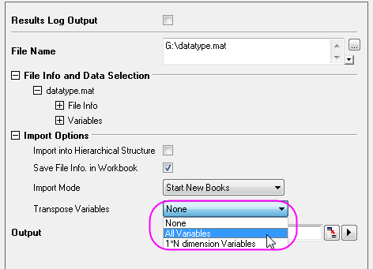

FAQ-438 Wie kann ich beim Importieren von Daten aus MATLAB Variablen transponieren?
Matlab-Transpose-Variable
Letztes Update: 04.02.2015
Beim Importieren von Daten aus MATLAB in Origin-Arbeitsblätter oder -Matrizen möchten Sie die Variablen möglicherweise transponieren. Mit dieser Funktion können Sie für alle oder einen Teil der Variablen in den importierten Dateien transponieren.
Zuerst:
- Erstellen Sie eine neue Arbeitsmappe (Matrix), indem Sie auf Datei: Neu: Arbeitsblatt (oder Datei: Neu: Matrix) klicken.
- Klicken Sie auf Import: Matlab(Mat) und wählen Sie eine MATLAB -Datei, um sie dann zu dem unteren Bedienfeld hinzuzufügen. Klicken Sie auf OK, um den Dialog zu öffnen.
- Wählen Sie unter Importoptionen die Option Alle Variablen oder 1*N Dimension Variablen in der Auswahlliste Variablen transponieren. Klicken Sie auf OK, um den Dialog zu schließen.

Schlüsselwörter:MATLAB, Datenimport, transponieren
Origin-Version mind. erforderlich: 2015 SR0